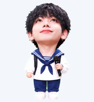

Look aroundA clockwise preview of all sixteen directions.Illustrative sweep · in the app, gaze follows the pointer
Inspect a directionSelect any individual gaze pose at its native size.Direction UpUp-right · 22.5°Up-right · 45°Up-right · 67.5°RightDown-right · 112.5°Down-right · 135°Down-right · 157.5°DownDown-left · 202.5°Down-left · 225°Down-left · 247.5°LeftUp-left · 292.5°Up-left · 315°Up-left · 337.5°